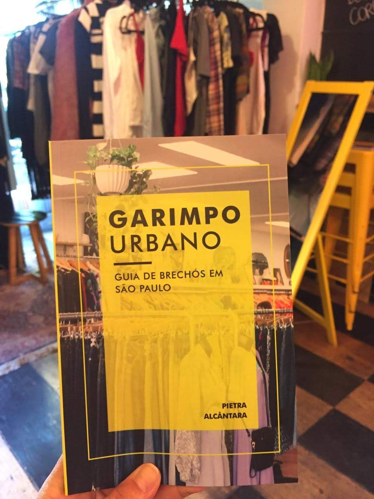
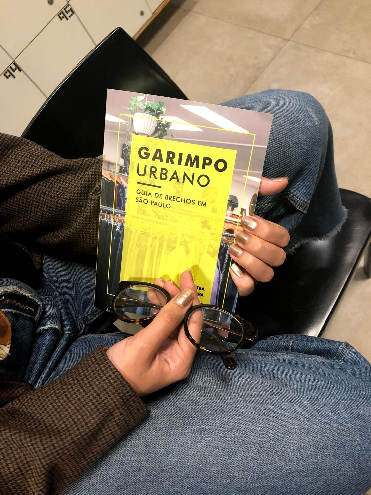
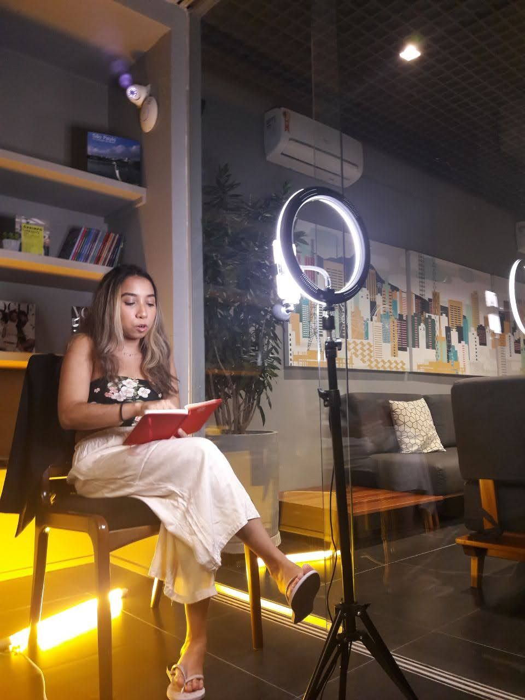

Garimpo Urbano
Autora, livro-reportagem independente, 2018–2019
Livro-reportagem que cataloga 60 brechós de São Paulo e abriu minha entrada no mercado de moda.
- 60 brechós apurados um a um, em todas as regiões da cidade
- Selecionado no Speed Mentoring, programa de aceleração do Sebrae
- Livro vendido e usado como porta de entrada no mercado de moda
Ler case completo
Eu ouvia de muita gente que queria comprar em brechó, mas não conhecia nenhum. Só que São Paulo está cheia deles. Foi daí que nasceu o Garimpo Urbano, um livro-reportagem que cataloga 60 brechós da cidade.
Visitei brechós de todas as regiões de São Paulo e confirmei as informações de cada um diretamente com os responsáveis, numa apuração feita endereço por endereço. O projeto começou como meu trabalho de conclusão em jornalismo, apresentado em 2018. Depois, inscrevi o livro no Speed Mentoring, programa de aceleração do Sebrae, e ele foi selecionado. Com isso, foi publicado de forma independente em 2019. Fiz a pauta, a apuração e o texto, e contratei um especialista para a diagramação e o design.
O livro foi vendido e virou meu cartão de visitas no mercado de moda. Foi com ele que entrei na área como social media, em 2020, a partir de um lançamento digital feito para captar clientes.

